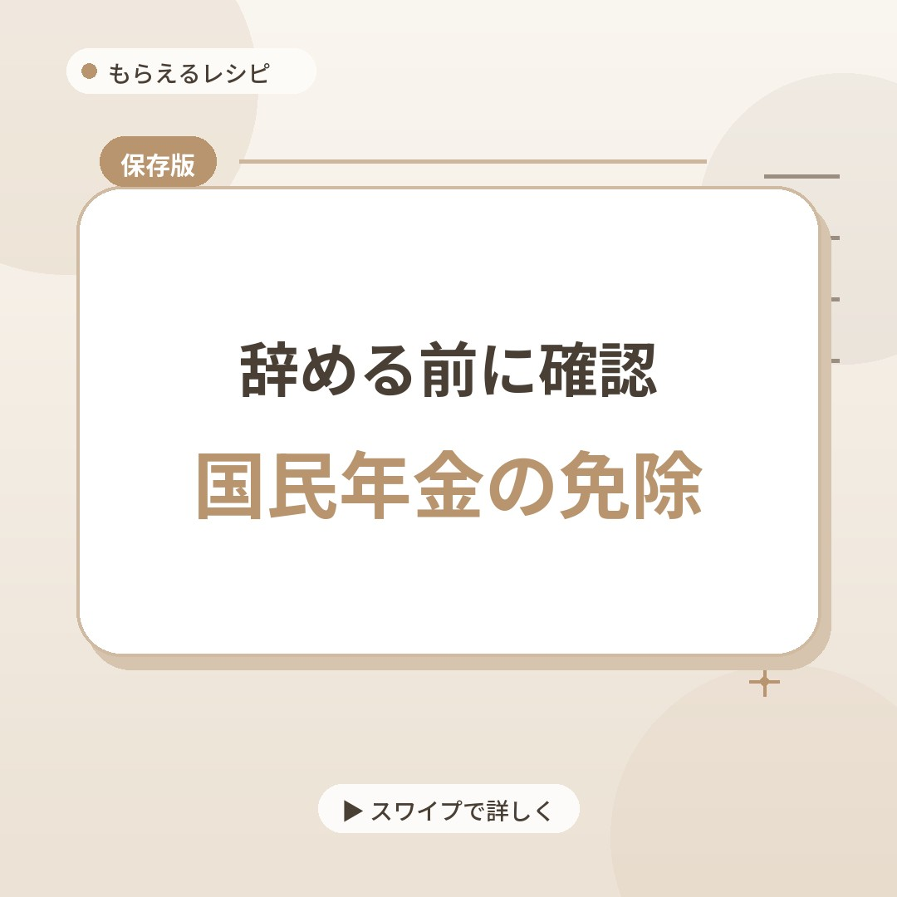
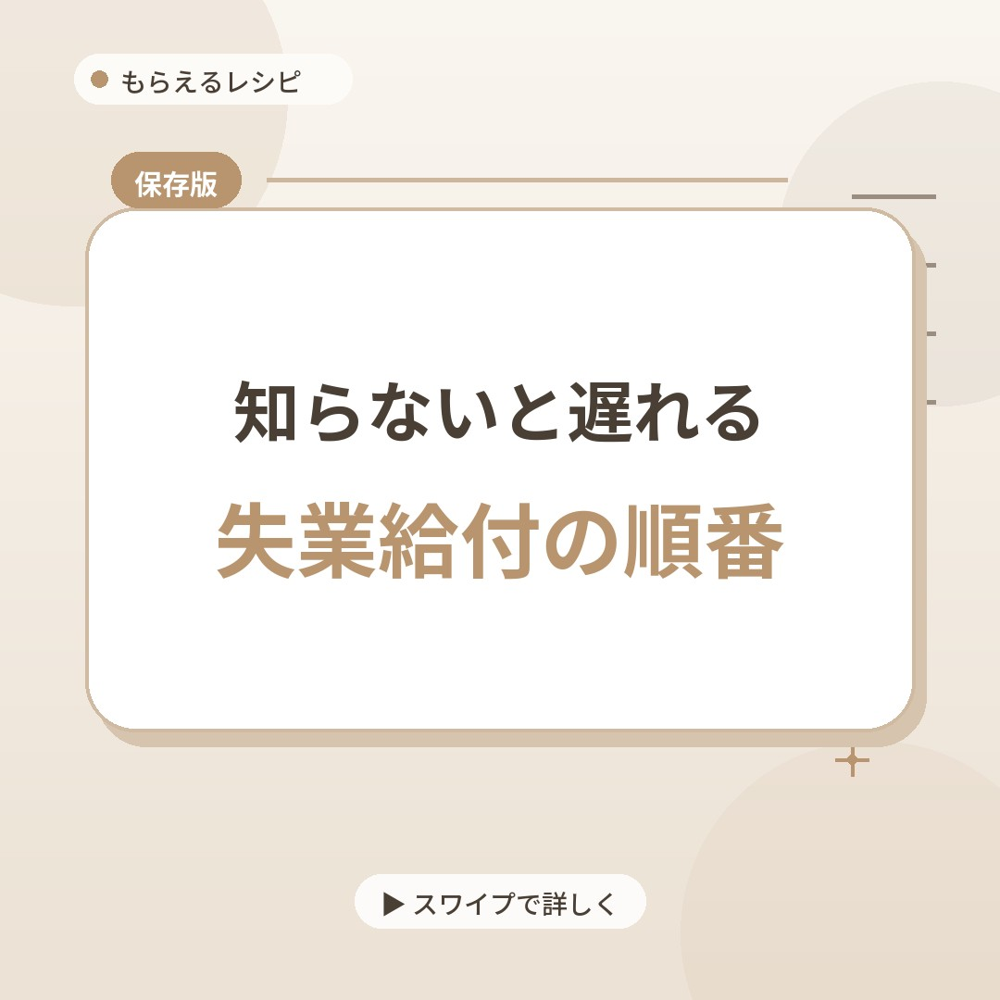

こんな情報をお届けしています
退職・転職のタイミングで関わってくるお金が中心です

辞めたあとに関わる制度
国民年金、健康保険、失業給付、住民税。自分で動かないと始まらない手続きを、ひとつずつ整理してお届けします。

あなたに合う制度がわかる診断
辞めた理由や次の予定によって変わる「払うお金・もらえるお金」を、質問形式で整理します。

申請のタイミング・注意点
退職後の手続きには、過ぎると選べなくなる期限があります。「知ってたのに間に合わなかった」を防ぐために、条件と期限をセットでお伝えします。



国民年金、健康保険、失業給付。辞めたあとに払うお金と、もらえるお金を、公式情報でひとつずつ確認してからお届けします。
3つの質問で診断してみる診断だけでOK・所要30秒
3つの質問に答えるだけで、あなたが見落としやすいものがわかります
世の中には情報があふれています。それをひとつずつ確認して、整理する場所でありたいと思っています。
給付金や手当をかたった詐欺が増えています。ご登録の前に、行っていないことを先にお伝えします。
給付金・手当をかたる詐欺の手口は、消費者庁・国民生活センターが注意喚起しています。少しでも不審に思ったら、消費者ホットライン「188」にご相談ください。
退職・転職のタイミングで関わってくるお金が中心です
国民年金、健康保険、失業給付、住民税。自分で動かないと始まらない手続きを、ひとつずつ整理してお届けします。
辞めた理由や次の予定によって変わる「払うお金・もらえるお金」を、質問形式で整理します。
退職後の手続きには、過ぎると選べなくなる期限があります。「知ってたのに間に合わなかった」を防ぐために、条件と期限をセットでお伝えします。
登録前に気になることをまとめました
Q.本当に無料ですか？あとから料金を請求されませんか？
A.情報の配信もLINEへのご登録も無料です。こちらから一方的に有料サービスを売り込むことはありません。
Q.なぜこの情報を無料で発信しているのですか？
A.「知らないから損する」を、ひとりでも減らしたいからです。個別相談の中で、ご希望に応じて提携する法人様をご紹介することがあり、その場合は紹介先の企業様から手数料をいただく仕組みで運営しています。皆さまから紹介の対価をいただくことはありません。始めたきっかけは運営者についてに書いています。
Q.個人情報は何に使われますか？
A.LINEにご登録いただくと、LINEのユーザーIDや表示名などの情報を、情報配信とお問い合わせ対応のために利用します。詳しくはプライバシーポリシーをご覧ください。
Q.MLMや高額な商材の勧誘はありますか？
A.ありません。お届けしているのは公的な制度・手当・節約に関する情報が中心です。ご相談の内容によっては、提携する法人様のお仕事をご紹介することもありますが、強引な勧誘は行いません。
Q.運営者は誰ですか？
A.個人で「もらえるレシピ」として活動しています。詳しくは運営者についてをご覧ください。
友だち追加すると、メニューから制度ごとの要点を確認できます。当てはまるか分からないことは、メッセージで質問してください。公式情報を確認したうえでお返事します。登録も相談も無料で、いつでもブロックできます。
LINEで友だち追加する